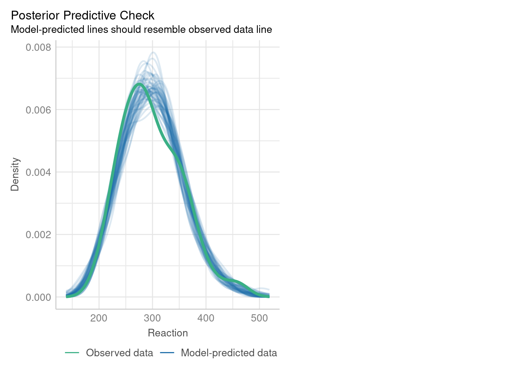

# install and load the package
install.packages("performance")
library(performance)7 Checking assumptions
As with all statistical models, mixed effects models make certain assumptions about the dataset and the population it’s drawn from. If these assumptions are not well met, then any results we get from our model must be taken with a huge grain of salt.
7.1 Libraries and functions
Click to expand
We’ll be using the performance package in R to visually check assumptions.
7.2 What are the assumptions?
The assumptions of a linear mixed effects model - which we’ve been dealing with so far in the course - are very similar to the assumptions of a standard linear model, and include all the things you’re likely used to seeing:
- Continuous response variable
- Independence of data points (beyond the non-independence that we have accounted for with our random effects)
- Linearity in the relationship between the predictor(s) and the response
- Residuals are normally distributed
- Residuals have equality of variance
And, though it isn’t a “formal” assumption in the strictest sense, we also want to ensure that there aren’t any overly influential data points.
Because we now have random effects in our model, there are a couple of additional assumptions that we make:
- The coefficients of the random effects are normally distributed
- Random effects are not influenced by any of the other predictors
7.3 Testing these assumptions
The first two of our assumptions - continuous response variable and independence - can’t be tested just by examining the dataset or residuals. These two assumptions fit within a broader idea of “choose the right model”, which requires you as a researcher to think carefully about your experimental design.
The rest of our assumptions can be assessed using the same method that we use for a standard linear regression analysis: visualisation via diagnostic plots.
Let’s look at our sleepstudy dataset again. Here is the full model that we fitted to those data:
data("sleepstudy")
lme_sleep <- lmer(Reaction ~ Days + (1 + Days|Subject),
data = sleepstudy)Now, let’s visualise it. We could create each of the plots by hand if we wished (using the broom.mixed package to augment our dataset), but thankfully there exists a much quicker method, using an R package called performance.
Tip
The performance package contains a bunch of functions that allow us to test the quality of our model. For the purposes of visualisation, we’ll use check_model, but I encourage you to explore this package in more detail as there’s a lot more to it (it’s super helpful for evaluating the performance of generalised linear models and Bayesian models, as well as mixed models).
Note that you might also need to install and/or load the see package in order to use the performance package.
7.3.1 The usual suspects
We’ll start by looking at the diagnostic plots that we’re used to seeing from standard linear models.
check_model(lme_sleep,
check = c("linearity", "homogeneity", "qq", "outliers"))The plot for influential observations might look a bit different to the Cook’s distance plot that you might be used to. On this plot, there are 4 data points labelled in red which fall really far outside our dashed contour lines (8, 57, 60 and 131). This tells us that we might want to re-examine these points, perhaps by excluding them from the dataset, fitting a new linear mixed model, and seeing whether our conclusions are still the same.
The linearity and homogeneity of variance plots look alright, overall, although there’s some indication that our influential points might be causing a bit of drama there too. There’s some snaking in the Q-Q plot that suggests our residuals have a “heavy-tailed”, or leptokurtic, distribution.
7.3.2 Normality of random effects
The other important assumption to check via visualisation is the normality of our random effects estimates.
check_model(lme_sleep, check = "reqq")We have two random effects in our model - a set of random intercepts by Subject, and a set of random slopes of Days on Subject.
For each of these, a separate normal Q-Q plot has been constructed. If you look closely, you’ll see that there are 18 points in each of our Q-Q plots here, which correspond to the 18 subjects in the dataset.
This lets us evaluate whether our set of coefficients for these random effects are normally distributed. In other words - do the set of y-intercepts and the set of gradients that were generated appear to have been sampled from a normal underlying distribution? Here, it looks like they do, which is excellent news.
7.3.3 Posterior predictive check
One of the other plots that is offered as part of check_model is called the posterior predictive check. It’s quite a nice option to include, as it can give you an overall idea of how good a job your model does in predicting your data.
check_model(lme_sleep, check = "pp_check")
Here, the function has run a set of simulations for us, using the linear mixed model we created. Each of these simulated datasets, created from our model, is shown on the plot by a thin blue line (as you can see, many simulations have been run).
The green line then shows us our current dataset. If the green line shows the same sort of pattern as all the thinner blue lines, this indicates good overall model fit.
For this dataset, it really isn’t bad at all for the most part! However, our dataset (the green line) does have a bit of a “dip” or “dent” that doesn’t seem to be occurring in very many of our blue lines. This could potentially indicate that our model is a bit too simple, i.e., there is some other important variable that we’ve not factored in here; or it could simply be a result of random noise.
Changing plotting colours in check_model
If you find the green, blue and red default colours in check_model to be a little too similar to each other for your liking, there is an optional colours argument in the function that you can add. For instance, you could change the green to a yellow, by adding this to the check_model function: colors = c("#fada5e", "#1b6ca8", "#cd201f").
7.4 Exercises
7.4.1 Dragons revisited (again)
Exercise
Level:
Let’s once again revisit the dragons dataset, and the minimal model that we chose in Exercise 6.6.1 based on significance testing:
dragons <- read_csv("data/dragons.csv")
lme_dragons_dropx <- lmer(intelligence ~ wingspan + scales +
(1 + wingspan|mountain),
data=dragons)Fit diagnostic plots for this model using the code given above. What do they show?
Worked answer
check_model(lme_dragons_dropx,
check = c("linearity", "homogeneity", "qq", "outliers"))check_model(lme_dragons_dropx,
check = c("reqq", "pp_check"))Try comparing these diagnostic plots to the diagnostic plots for the full model, intelligence ~ wingspan*scales + (1 + wingspan|mountain). Are the assumptions better met? Why/why not?
7.4.2 Arabidopsis
Exercise
Level:
For this second exercise, we’ll use another internal dataset from lme4, called Arabidopsis. These data are about genetic variation in a plant genus arabidopsis (rockcress), in response to fertilisation and “simulated herbivory” (some of the plants’ stems were damaged/clipped to simulate animal grazing).
data("Arabidopsis")In this dataset, there are eight variables:
total.fruits, an integer variable measuring the total fruits produced per plantamd, a variable measuring whether the plant underwent simulated herbivory (clipped or unclipped)nutrient, a variable measuring which type of fertiliser/treatment the plant received (1, minimal or 8, added)reg, or region, a variable with three categories (NL Netherlands, SP Spain, SW Sweden)popu, or population, a variable representing groups within the regionsgen, or genotype, a variable with 24 categoriesrack, a “nuisance” or confounding factor, representing which of two greenhouse racks the plant was grown onstatus, another nuisance factor, representing the plant’s germination method (Normal, Petri.Plate or Transplant)
We’re interested in finding out whether the fruit yield can be predicted based on the type of fertiliser and whether the plant underwent simulated herbivory, across different genotypes and populations.
Fit the following mixed effects model:
total.fruits ~ nutrient + rack + status + amd + reg + (1|popu) + (1|gen)
and check its assumptions. What can you conclude about the suitability of a linear mixed effects model for this dataset?
Worked answer
Fitting the model
Our research question tell us that total.fruits is the response variable, and that nutrient and amd are fixed predictors of interest. The rest of our variables are confounds that we’d like to adjust for.
Only some of these additional variables have sufficient levels/categories to be treated as random effects, but both popu and gen do qualify. So far we’ve only talked about having one clustering variable at a time within a dataset; we’ll talk more about this in subsequent sessions, and for now, we’ve shown you how to correctly do it for the current dataset:
lme_arabidopsis <- lmer(total.fruits ~ nutrient + rack + status + amd + reg +
(1|popu) + (1|gen), data=Arabidopsis)boundary (singular) fit: see help('isSingular')The nuisance variables rack and status are included, along with reg (which could potentially be an effect of interest depending on the research question). Because they have less than 5 levels, they’re best fitted as fixed effects.
Is this a suitable model?
Probably not, for multiple reasons.
Firstly, we get a warning message telling us that our model has a “singular fit”. This is usually a sign that your dataset isn’t large enough to support all of the different parameters, fixed or random, that you’ve asked R to estimate.
Secondly, if we look at the diagnostic plots, we can see some real issues emerging.
check_model(lme_arabidopsis,
check = c("linearity", "homogeneity", "qq", "outliers"))check_model(lme_arabidopsis,
check = c("reqq", "pp_check"))Many of these plots look bad. There’s evidence for non-linearity, for heterogeneity of variance and non-normality in the residuals, and the posterior predictive check looks terrible.
Chat about these bonus questions with a neighbour, or a trainer. Understanding why these diagnostic plots look bad, and why we might need to take a closer look at the dataset before we fit things, will serve you really well when working with your own data.
7.5 Summary
Key Points
- Linear mixed effects models have the same assumptions as standard linear models
- Mixed models also make assumptions about the distribution of random effects
- The
performancepackage in R can be used to assess whether these assumptions are met using diagnostic plots